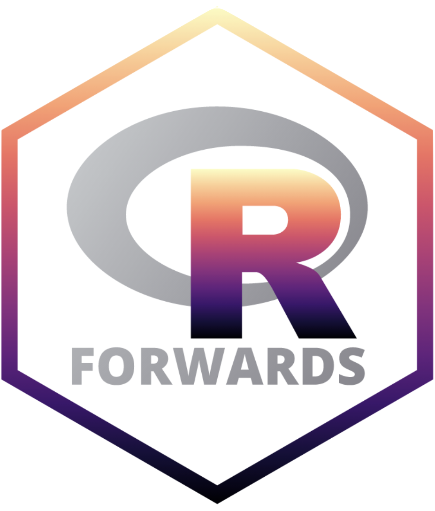
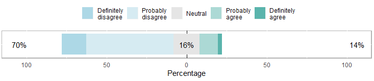
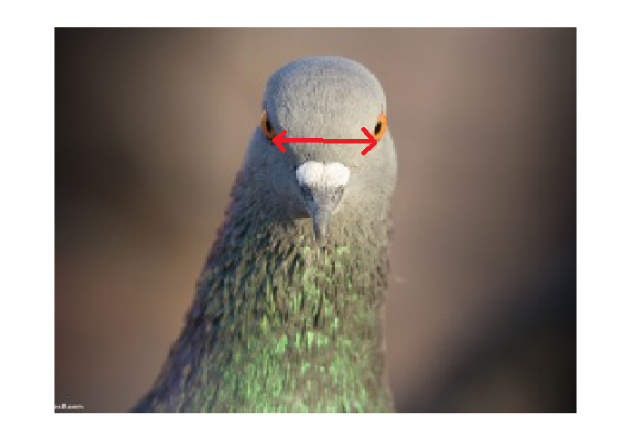
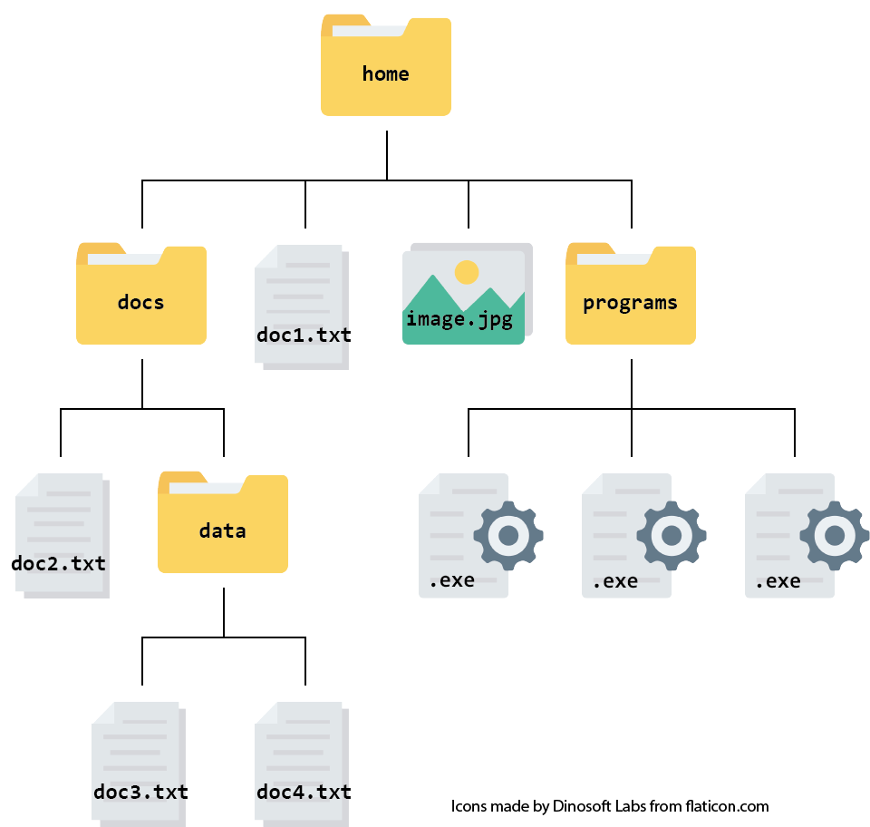
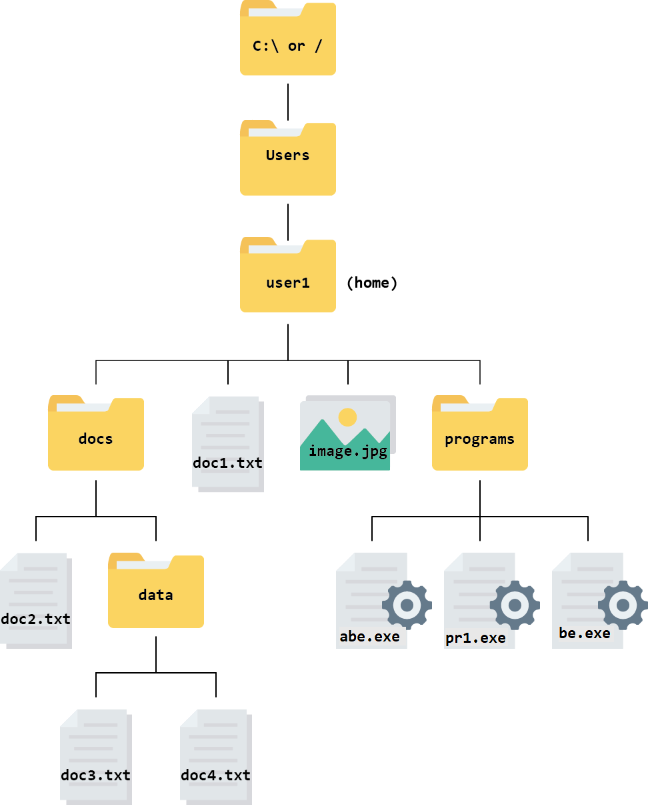

| A | B |
|---|---|
| 12.4 | 12.6 |
| 11.2 | 11.3 |
| 11.6 | 12.1 |
| 12.3 | 12.2 |
| 11.8 | 11.8 |
| 10.7 | 11.5 |
| 11.3 | 11.2 |
| 11.6 | 11.9 |
| 12.3 | 11.2 |
| 10.5 | 12.1 |
| 12.1 | 11.9 |
| 10.4 | 10.7 |
| 10.8 | 11.0 |
| 11.9 | 12.2 |
| 10.9 | 12.6 |
| 10.8 | 11.6 |
| 10.4 | 10.7 |
| 12.0 | 12.4 |
| 11.7 | 11.8 |
| 11.3 | 11.1 |
| 11.5 | 12.9 |
| 11.8 | 11.9 |
| 10.3 | 11.1 |
| 10.3 | 12.2 |
| 11.5 | 11.8 |
| 10.7 | 11.5 |
| 11.3 | 11.2 |
| 11.6 | 11.9 |
| 13.3 | 11.2 |
| 10.7 | 11.1 |
| 12.1 | 11.6 |
| 10.2 | 12.7 |
| 10.8 | 11.0 |
| 11.4 | 12.2 |
| 10.9 | 11.3 |
| 10.3 | 11.6 |
| 10.4 | 12.2 |
| 10.0 | 12.4 |
| 11.2 | 11.3 |
| 11.3 | 11.1 |
Bioinformatics:
Some easy wins and a roadmap to competency
Emma Rand, University of York
Summary
About me
Reproducibility, Why script?
About you
Easy wins
Key, often untaught, concepts
Roadmap to competency
About me
About me
Senior Lecture in Department of Biology, University of York
Data Science and reproducibility in the Biosciences: especially ’omics
R Forwards Core team
Project lead Cloud-SPAN

About me
Teach data analysis and reproducibility in analytic pipelines predominantly to those who do not see themselves as programmers
Training Early Career Researchers
Encourage people to code
Promote programming competence as learned, not innate
Why script?
Reproducibility is key!
- “… obtaining consistent results using the same input data; computational steps, methods, and code; and conditions of analysis.”. (National Academies of Sciences et al. 2019)
Also see
- The Turing Way “Definitions for Reproducibility” (Community 2022)
Reproducibility is key!

You are your first collaborator!

futureself, CC-BY-NC, by Julen Colomb
Why does it matter?
Five selfish reasons to work reproducibly (Markowetz 2015). Alternatively, see the very entertaining talk
Many high profile cases of work which did not reproduce e.g. Anil Potti unravelled by Baggerly and Coombes (2009)
Will become standard in Science and publishing e.g OECD Global Science Forum Building digital workforce capacity and skills for data-intensive science (OECD Global Science Forum 2020)
It’s science!
Be nice to future you!
About you!
Go to https://www.menti.com/ and enter code 2172 3625
QR code
You are not alone!
Expectations of Stage 1 Biologists about Data Analysis.
Responses to the question “I will enjoy data analysis”
Likert response
You are not alone!
“Nobody wants to learn to code. They just want to kick ass.”
James Long rstudio::conf 2019. Putting empathy in action Building a ‘community of practice’ for analytics in a global corporation.
I don’t do any coding…
.and I’m not about to start!
You can still make steps towards reproducibility
Easy wins
Organise your data (Wickham 2014; Broman and Woo 2018)
Describe your data with metadata
Use a Project-oriented workflow with file and folder structure
Name things carefully
Organise your data
-
Use Tidy format (Wickham 2014)
variables in column and observations in rows.
One observation per row.
One thing per cell
Rectangular
E.g., 40 measurements of interorbital width (in mm) for two populations of domestic pigeons measured to the nearest 0.1mm
Interorbital width is the distance between the eyes
Not Tidy
not clear what the columns are
makes it look like there is a relationship between pairs of values
Tidy
| population | distance |
|---|---|
| A | 12.4 |
| B | 12.6 |
| A | 11.2 |
| B | 11.3 |
| A | 11.6 |
| B | 12.1 |
| A | 12.3 |
| B | 12.2 |
| A | 11.8 |
| B | 11.8 |
| A | 10.7 |
| B | 11.5 |
| A | 11.3 |
| B | 11.2 |
| A | 11.6 |
| B | 11.9 |
| A | 12.3 |
| B | 11.2 |
| A | 10.5 |
| B | 12.1 |
| A | 12.1 |
| B | 11.9 |
| A | 10.4 |
| B | 10.7 |
| A | 10.8 |
| B | 11.0 |
| A | 11.9 |
| B | 12.2 |
| A | 10.9 |
| B | 12.6 |
| A | 10.8 |
| B | 11.6 |
| A | 10.4 |
| B | 10.7 |
| A | 12.0 |
| B | 12.4 |
| A | 11.7 |
| B | 11.8 |
| A | 11.3 |
| B | 11.1 |
| A | 11.5 |
| B | 12.9 |
| A | 11.8 |
| B | 11.9 |
| A | 10.3 |
| B | 11.1 |
| A | 10.3 |
| B | 12.2 |
| A | 11.5 |
| B | 11.8 |
| A | 10.7 |
| B | 11.5 |
| A | 11.3 |
| B | 11.2 |
| A | 11.6 |
| B | 11.9 |
| A | 13.3 |
| B | 11.2 |
| A | 10.7 |
| B | 11.1 |
| A | 12.1 |
| B | 11.6 |
| A | 10.2 |
| B | 12.7 |
| A | 10.8 |
| B | 11.0 |
| A | 11.4 |
| B | 12.2 |
| A | 10.9 |
| B | 11.3 |
| A | 10.3 |
| B | 11.6 |
| A | 10.4 |
| B | 12.2 |
| A | 10.0 |
| B | 12.4 |
| A | 11.2 |
| B | 11.3 |
| A | 11.3 |
| B | 11.1 |
Tidy data
Easier to summarise, analyse and plot because the organisation matches the conceptual structure of the data:
it is more obvious what the variables are
it is more obvious that there is no relationship between any of the pigeons
functions are designed to work with variables in columns
Metadata
data about data
what the data files are
relationship between file and treatments
what the variables are
Project-oriented workflow
use folders to organise your work
you are aiming for structured, systematic and repeatable.
inputs and outputs should be clearly identifiable from structure and/or naming
Have a readme file that gives an overview of the project
E.g., RStudio Projects
Example
-- liver_transcriptome/
|__data
|__raw/
|__processed/
|__images/
|__code/
|__reports/
|__figures/Naming things

documents, CC-BY-NC, https://xkcd.com/1459/
Naming things
Guiding principle - Have a convention! Good file names are:
machine readable
human readable
play nicely with sorting
I suggest
no spaces in names
use snake_case or kebab-case rather than CamelCase or dot.case
use all lower case except very occasionally where convention is otherwise, e.g., README, LICENSE
ordering: use left-padded numbers e.g., 01, 02….99 or 001, 002….999
dates ISO 8601 format: 2020-10-16
write down your conventions
-- liver_transcriptome/
|__data
|__raw/
|__2022-03-21_donor_1.csv
|__2022-03-21_donor_2.csv
|__2022-03-21_donor_3.csv
|__2022-05-14_donor_1.csv
|__2022-05-14_donor_2.csv
|__2022-05-14_donor_3.csv
|__processed/
|__images/
|__code/
|__functions/
|__summarise.R
|__normalise.R
|__theme_volcano.R
|__01_data_processing.py
|__02_exploratory.R
|__03_modelling.R
|__04_figures.R
|__reports/
|__01_report.qmd
|__02_supplementary.qmd
|__figures/
|__01_volcano_donor_1_vs_donor_2.eps
|__02_volcano_donor_1_vs_donor_3.epsI don’t do any coding…
… but I might want to to start
There are some key, but often untaught, concepts
Key, often untaught, concepts
About you!
Go to https://www.menti.com/ and enter code 2172 3625
QR code
File systems
A file system is made up of files and directories organised in a hierarchical way.
Directory is the old word for folder but commands that act on folders in most programming languages and environments reflect this history
File systems
Figure 1: A file hierarchy containing 4 levels of folders and files. Figure adapted from (Rand, Emma et al. 2022).
Root and home directories

Figure 2: The hierarchy from the root. The top level is C:\ in Windows and / in Mac. Below that is the Users directory which has a folder for each user. Your home directory is named with your username inside the Users folder. Figure adapted from (Rand, Emma et al. 2022).
Working directory
The working directory of a program is the default location a program is using.
where the program will read and write files by default.
You have only one working directory at a time.
‘working directory’, ‘current working directory’ and ‘current directory’ all mean the same thing.
File Paths
location of a file or directory
Paths appear in the address bar of your browser or file manager
We need to know a file path whenever we want to read, write or refer to a file using code rather than interactively pointing and clicking to navigate.
File Paths
In a file path, each directory is represented as a separate component separated by a backslash
\or a forward slash/.Most systems use forward slashes but Windows uses backslashes1
A path can be absolute or relative depending on the starting point.
Absolute paths
An Absolute path contains the complete list of directories needed to locate a file on your computer from the root.
For example, the absolute path for the file called
doc3.txtin the file system above would be/Users/user1/docs/data/doc3.txton Mac andC:\Users\user1\docs\data\doc3.txton Windows.
Relative paths
A relative path gives the location of a filesystem object relative to the working directory.
if your working directory was
docs, the relative path fordoc3.txtwould bedata/doc3.txt.if your working directory was
docsthe relative path forabe.exefiles would be../programs/abe.exe.
../ allows you to look in the directory above the working directory and ../.. allows you to look in the directory two levels above the working directory and so on.
Figure 3: The hierarchy from the root. Figure adapted from (Rand, Emma et al. 2022).
Use relative paths
Most of the time you should use relative paths because that makes your work portable.
You only need to use absolute paths when you are referring to filesystem outside the one you are using.
What they forgot to teach you about computers
Computational Analysis for Bioscientists (Rand 2023)
Summary
Reproducibility matters, especially to future you
Scripting makes your work more reproducible because everything is written down
But… You don’t have to learn to code to make steps towards reproducibility
Understanding file systems, working directories and paths is key for learning to code
Made with R (R Core Team 2023), Quarto (Allaire et al. 2022),
knitr(Xie 2022),kableExtra(Zhu 2021)Licensed under a Creative Commons Attribution-NonCommercial-ShareAlike 4.0 International License.
References
Allaire, J. J., Charles Teague, Carlos Scheidegger, Yihui Xie, and Christophe Dervieux. 2022. Quarto. https://doi.org/10.5281/zenodo.5960048.
Baggerly, Keith A, and Kevin R Coombes. 2009. “DERIVING CHEMOSENSITIVITY FROM CELL LINES: FORENSIC BIOINFORMATICS AND REPRODUCIBLE RESEARCH IN HIGH-THROUGHPUT BIOLOGY.” Ann. Appl. Stat. 3 (4): 1309–34. https://doi.org/10.2307/27801549.
Broman, Karl W, and Kara H Woo. 2018. “Data Organization in Spreadsheets.” Am. Stat. 72 (1): 2–10.
Community, The Turing Way. 2022. The Turing Way: A Handbook for Reproducible, Ethical and Collaborative Research. Zenodo. https://doi.org/10.5281/ZENODO.3233853.
Markowetz, Florian. 2015. “Five Selfish Reasons to Work Reproducibly.” Genome Biol. 16 (December): 274. https://doi.org/10.1186/s13059-015-0850-7.
National Academies of Sciences, Engineering, Medicine, Policy, Global Affairs, Engineering, Medicine Committee on Science, Public Policy, Board on Research Data, et al. 2019. Understanding Reproducibility and Replicability. National Academies Press (US). https://www.ncbi.nlm.nih.gov/books/NBK547546/.
OECD Global Science Forum. 2020. “Building Digital Workforce Capacity and Skills for Data-Intensive Science.” http://www.oecd.org/officialdocuments/publicdisplaydocumentpdf/?cote=DSTI/STP/GSF(2020)6/FINAL&docLanguage=En.
R Core Team. 2023. R: A Language and Environment for Statistical Computing. Vienna, Austria: R Foundation for Statistical Computing. https://www.R-project.org/.
Rand, Emma. 2023. Computational Analysis for Bioscientists (version 0.1). https://github.com/3mmaRand/comp4biosci.
Rand, Emma, Chong, James, Buenabad-Chavez, Jorge, Cansdale, Annabel, Forrester, Sarah, and Greeves, Evelyn. 2022. “Cloud-SPAN/00genomics: Cloud-SPAN Genomics Course Overview,” May. https://doi.org/10.5281/ZENODO.6564314.
Wickham, Hadley. 2014. “Tidy Data.” Journal of Statistical Software 59 (10): 1–23. https://doi.org/10.18637/jss.v059.i10.
Xie, Yihui. 2022. “Knitr: A General-Purpose Package for Dynamic Report Generation in r.” https://yihui.org/knitr/.
Zhu, Hao. 2021. “kableExtra: Construct Complex Table with ’Kable’ and Pipe Syntax.” https://CRAN.R-project.org/package=kableExtra.